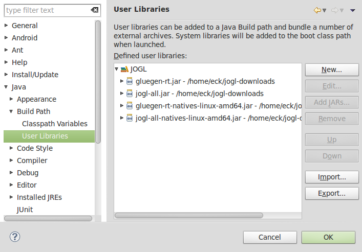

Section 7: GLUT and JOGL
OpenGL is a graphics API only, with no support for things like windows or events. OpenGL depends on external mechanisms to create the drawing surfaces on which it will draw and to use those drawing surfaces in complete programs. Windowing APIs that support OpenGL do so as one library among many others that are used to produce a complete application. We will look at two cross-platform APIs that make it possible to use OpenGL in applications, one for C/C++ and one for Java.
For simple applications written in C or C++, one possible windowing API is GLUT (OpenGL Utility Toolkit). GLUT is a very small API. It is used to create windows that serve as simple frames for OpenGL drawing surfaces. It has support for handling mouse and keyboard events, and it can do basic animation. It does not support controls such as buttons or input fields, but it does allow for a simple menu that pops up in response to a mouse action. You can find information about GLUT at http://www.opengl.org/resources/libraries/glut/. Many programs actually use FreeGLUT, which is compatible with GLUT but has a few extensions and a fully open source license; see http://freeglut.sourceforge.net/.
JOGL (Java OpenGL) is a collection of classes that make it possible to use OpenGL in Java applications. JOGL is integrated into the standard Java graphical user interface APIs, Swing and AWT. With JOGL, you can create Java GUI components on which you can draw using OpenGL. These OpenGL components can be used in any Java application, in much the same way that you would use a Canvas or JPanel as a drawing surface. Like many things Java, JOGL is quite complicated. We will use it only in fairly simple applications. JOGL is not a standard part of Java. It's home web site is http://jogamp.org/jogl/www/.
Some Background on C
Since I am not assuming that you come to this course knowing how to program in C, I should give you enough information to follow the GLUT programming examples that we will look at and to write similar programs of your own. To work with GLUT, you will need a C compiler and copies of the OpenGL and GLUT (or FreeGLUT) development libraries. I can't tell you exactly that means on your own computer. On my Linux computer, for example, the free C compiler gcc is already available. To do OpenGL development, I installed several packages, including freeglut2-dev and libgl1-mesa-dev. (Mesa is a Linux implementation of OpenGL.) If glutprog.c contains a complete C program that uses GLUT, I can compile it using the command
gcc -o glutprog glutprog.c -lglut
The "-o glutprog" tells the compiler to use "glutprog" as the name of its output file, which can then be run as a normal executable file; without this option, the executable file would be named "a.out". The "-lglut" tells the compiler to use the GLUT and OpenGL libraries. If I leave it out, the compiler won't recognize any GLUT or OpenGL functions.
C is a small language, compared to Java, and for the most part, it is fairly easy to learn for someone who knows Java. C does not have classes or objects. It does have something called a struct, which is something like an object that contains data but no methods, but you don't need to use structs for OpenGL programming in C. Control structures are more or less the same as in Java, except that there is no try..catch statement. Subroutine definitions are also similar to Java, but there are no modifiers such as private or final. As in JavaScript, all subroutines are referred to as "functions", whether or not they return a value.
A C program consists of a collection of functions and global variables, which can be spread across multiple files. Exactly one of those functions must be a main() routine, whose definition generally takes the form
int main(int argc, char** argv) {
// main program code
}
As in Java, the parameters to main() contain information about command line arguments from the command that was used to execute the program. (The "**" has to do with C's implementation of pointers and arrays.)
C makes a distinction between "defining" a variable or function and "declaring" it. A variable or function can have only one definition, but it can be declared any number of times. A variable or function must be declared before it is used, but does not have to be defined before it is used. (That is, a C compiler will not look ahead in a file to find a declaration.) A function is defined in the usual way; for example:
int square( int x ) {
return x * x;
}
Since a definition is also a declaration, this also declares square(). To declare a function without defining it, leave out the body of the function and replace it with a semicolon:
int square(int x);
One reason for this distinction is that, although C programs can consist of several files, files are always compiled separately. If file A wants to use a function or variable that is defined in file B, then file A must include a declaration of that function or variable. This type of cross-file reference is usually handled using header files and the #include directive. A header file typically has a name that ends with ".h" and contains only declarations. An include directive in a file tells the compiler to include the text from a header file in the code that it compiles. For example, our OpenGL/GLUT programs will usually start with these include directives:
#include "GL/gl.h" #include "GL/freeglut.h" #include "stdio.h"
(The second line could be #include "GL/glut.h", for the standard version of the GLUT library.) The three header files included here are standard header files that the compiler will look for in some standard location, but the compiler will also look in the current directory for header files. If you write a .c file containing functions for use in other files, you will usually write a matching .h file containing declarations of those functions.
The header file stdio.h declares C's standard input/output function. I include it here mostly for the function printf(), which outputs text to the command line and is useful for writing debugging messages. It is essentially the same function as System.out.printf in Java. For example:
printf("The square root of %d is %f\n", x, sqrt(x));
The function sqrt(), by the way, is defined in another header file, math.h, along with other mathematical functions such as sin() and cos().
(By the way, a typical variable declaration, such as "int x;", is also a definition of the variable. To get a variable declaration that is not a definition, add the word "extern": "extern int x;". You probably won't need to know this.)
C has most of the same basic types as Java: char, short, int, long, float, double. There is no "byte" data type, but char is essentially an 8-bit integer type. There are no guarantees about the number of bits used for the other numerical data types. The integer types can be marked "signed" or "unsigned", where the unsigned types have only positive values. For example, signed char has values in the range −128 to 127, while unsigned char has values in the range 0 to 255. Since C is very profligate about converting one numeric type to another, we don't have to worry too much about this. (I should note that to avoid the ambiguities of C data types, OpenGL defines its own set of data types such as GLfloat and GLint, and to be completely correct, you can use them in your OpenGL programs in place of C's standard type names.)
Operators and expressions are similar in C and in Java. C does not use "+" as a string concatenation operator; in fact, C has no such operation for strings. And C adds some operators for working with pointers.
Pointers and pointer types are probably the hardest part of C for Java programmers. For our purposes, you mostly need to know a little about how the unary operators "*" and "&" are used with pointers. Java uses pointers implicitly, but in C they are explicit. For example, the data type int* represents "pointer to int." A value of type int* is a memory address, and the memory location at that address is assumed to hold a value of type int. If ptr is a variable of type int*, then *ptr represents the integer stored at the address to which ptr points. *ptr works like a variable of type int: You can use it in an expression to fetch the value of the integer from memory, and you can assign a value to it to change the value in memory (for example, "*ptr = 17;"). If num is a variable of type int, then &num is a pointer value that points to num. Thus, &num is an expression of type int*. "&" is the address operator, and &num is often pronounced "address of num." Of course, you can use pointers with all data types, not just int.
Arrays and pointers are very closely connected in C. An array is essentially the same as a pointer to the first element of the array, and a pointer variable can actually be used as if it is an array. For example, if ptr is of type *int, then ptr[3] would be the third integer after *ptr in memory. If we do
int *ptr = &A[5]; // ptr holds the address of the array element A[5]
where A is an array of int, then ptr[3] would be the same as A[8]! (This explains some peculiarities of the C API for OpenGL.) One corollary of all this is that C does no automatic range-checking for array indices, which can lead to all kinds of nasty run-time errors that will not be detected by the computer, as they would be in Java. It also means that there is no such thing as A.length in C, and it is not even possible to test for the length of an array.
When declaring an array variable in Java, you should either give the array a size or provide initial values:
int A[5]; // like int[] A = new int[5]; in Java.
int B[] = { 1, 2, 3 }; // B has length 3.
int *C = B; // C points to B[0] and can be used as an array of length 3!
The size of the array determines how much memory is allocated for it, but it doesn't stop you from referring to array elements that don't exist. Note that the placement of the square brackets in these declarations differs from Java.
A string in C is essentially an array of char but is usually thought of as being of type char*. By convention, a string always ends with a null character (ASCII code 0) to mark the end of the string. This is necessary because arrays do not have a defined length. The null character is inserted automatically for string literals. You can initialize a variable of type char* with a string literal:
char *greet = "Hello World";
The parameter type char** that was used in the definition of a main() function earlier really means array of strings (one * to mean array and one * to mean string), and "char** argv" could also be written "char *argv[]".
Using GLUT
The GLUT library makes it easy to write basic OpenGL applications in C. GLUT uses event-handling functions. You write functions to handle events that occur when the display needs to be repainted or when the user clicks the mouse or presses a key on the keyboard. In the main() routine, you do some initialization, including creating a window and telling GLUT about each event-handling function that you want to use; then you tell GLUT to run an event loop in which it waits for events and processes them by calling your functions until the program ends. To set up the event-handling functions, GLUT uses the fact that it is possible in C to pass a function name as a parameter to a function. (In this, it's similar to JavaScript, but C doesn't have anything like JavaScript's anonymous functions.) For example, a GLUT program might use the command
glutDisplayFunc(display);
where "display" is the name of a function that does OpenGL drawing, defined as
void display() {
// ... OpenGL drawing commands go here
}
glutDispalyFunc() installs this function as an event handler for display events, which occur when the contents of the window need to be redrawn, including when the window is first opened. Whenever that happens, display() will be called. There are a lot of possible event-handling functions, and I will only cover some of them. Let's jump right in and look at a possible main() routine for a GLUT program that uses most of the common event handlers:
int main(int argc, char** argv) {
glutInit(&argc, argv); // Required initialization!
glutInitDisplayMode(GLUT_DOUBLE | GLUT_DEPTH);
glutInitWindowSize(500,500); // size of display area, in pixels
glutInitWindowPosition(100,100); // location in window coordinates
glutCreateWindow("OpenGL Program"); // parameter is window title
glutDisplayFunc(renderFunction); // called when window needs to be redrawn
glutReshapeFunc(reshapeFunction); // called when size of the window changes
glutKeyboardFunc(keyFunction); // called when user types a character
glutSpecialFunc(specialKeyFunction);// called when user presses a special key
glutMouseFunc(mouseFunction); // called for mousedown, mouseup events
glutMotionFunc(mouseDragFunction); // called when mouse is dragged
glutIdleFunc(idleFunction); // called when there are no other events
glutMainLoop(); // Run the event loop! This function does not return.
return 0;
}
The first five lines do some necessary initialization, the next seven install event handlers, and the call to glutMainLoop() runs the event loop. I will discuss all of the non-obvious functions that are used here.
glutInitDisplayMode(GLUT_DOUBLE | GLUT_DEPTH) -- The parameter lists
features that you would like the OpenGL display to have. The features are represented by
constants that are ORed together in the parameter. GLUT_DEPTH says that a depth buffer
should be created; without it, the depth test won't work. If you are doing 2D graphics, you
wouldn't include this option. GLUT_DOUBLE asks for double
buffering, which means that drawing is actually done off-screen, and the
off-screen copy has to copied to the screen to be seen. The copying is done by
calling glutSwapBuffers(), which must be done at the end of the display function.
(Use GLUT_SINGLE to get single buffering; in that case, you have to call
glFlush() at the end of the display function.)
glutDisplayFunc(renderFunction) -- The display function
should contain OpenGL drawing code that can completely redraw the scene. This is
similar to paintComponent() in Java.
The display function can have any name, but it must be declared as a void
function with no parameters: void renderFunction()
Note that OpenGL commands don't mention any "graphics context." They just apply to a "current OpenGL context." GLUT can actually manage several windows, each with its own OpenGL context and each with its own event-handling functions. You can assume that when an event-handling function is called, the drawing context has been set correctly. In fact, the OpenGL context is created when glutCreateWindow() is called, and you can do any OpenGL initialization that you want to do at that point. It's common to write a function to do initialization and to call it just after the call to glutCreateWindow().
glutReshapeFunc(reshapeFunction) -- The reshape function
is called when the user changes the size of the window. Its parameters tell the
new width and height of the drawing area:
void reshapeFunction( int width, int height )
You might use this method to set up the projection transform, if the projection depends on the window size. This function should always set the OpenGL viewport, which is the part of the window that is used for drawing. Do this by calling
glViewport(0,0,width,height);
This is done by the default reshape function if you don't supply one of your own. By the way, you can use glViewport() in the display function to draw different pictures to different parts of the window.
glutKeyboardFunc(keyFunction) -- The keyboard function is
called when the user types a character such as 'b' or 'A' or a space. It is not called
for special keys such as arrow keys that do not produce characters when pressed.
The keyboard function has a parameter of type unsigned char.
It also has two int parameters that give the location of the mouse when the
key was pressed:
void keyFunction( unsigned char ch, int x, int y )
Whenever you make any changes to the program's data that require the display to be redrawn, you should call glutPostRedisplay(). This is similar to calling repaint() in Java. It is not necessary to do this in the reshape function, since the resizing causes the display to be redrawn. It is better to do call glutPostRedisplay() than to call the display function directly. (I also note that it's possible to call OpenGL drawing commands in the event-handling functions, but it probably only makes sense if you are using single buffering; if you do this, call glFlush() to make sure that the drawing appears on the screen.)
glutSpecialFunc(specialKeyFunction) -- The "special"
function is called when the user presses certain special keys, such as an arrow
key or the Home key. The parameters are an integer code for the key, plus the
mouse position when the key was pressed:
void specialKeyFucntion( int key, int x, int y )
GLUT has constants to represent the possible key codes, including GLUT_KEY_LEFT, GLUT_KEY_RIGHT, GLUT_KEY_UP, and GLUT_KEY_DOWN for the arrow keys and GLUT_KEY_HOME for the Home key. For example, you can check whether the user pressed the left arrow key by testing if (key == GLUT_KEY_LEFT)
glutMouseFunc(mouseFunction) -- The mouse function is
called for both mousepressed and mousereleased events, with a parameter to tell
which event occurred. The function will generally look like this:
void mouseFunction(int button, int buttonState, int x, int y) {
if (buttonState == GLUT_DOWN) {
// handle mousePressed event
}
else { // buttonState is GLUT_UP
// handle mouseReleased event
}
}
The first parameter tells which mouse button was pressed or released; its value is 0 for the left, 1 for the middle, and 2 for the right mouse button. The other two parameters tell the position of the mouse. Note that mouse position in GLUT is given in pixel coordinates with (0,0) in the top left corner of the window and y decreasing downward.
glutMotionFunc(mouseDragFunction) -- The motion function
is called when the user moves the mouse while dragging, that is while a mouse button
is pressed. After the use presses the mouse in the OpenGL window, this function will
continue to be called even if the mouse moves outside the window, and the mouse
release event will also be sent to the same window. The function has two parameters
to specify the new mouse position:
void mouseDragFunction(int x, int y)
glutIdleFunc(idleFunction) -- The idle function is called by the
GLUT event loop whenever there are no events waiting to be processed. The
idle function has no parameters. It is called as often as possible, not at
periodic intervals. GLUT also has a timer function which works pretty much
like JavaScript's setTimeout; that is, it schedules a function to be
called once, after some specified delay. To set a timer, call
glutTimerFunc(delayInMilliseconds, timerFunction, userSelectedID)
and define timerFunction as
void timerFunction(int timerID) ...
The parameter to timerFunction is the integer that was passed as the third parameter to glutTimerFunc. If you want to use glutTimerFunc for animation, the timer function can end with another call to glutTimerFunc.
The file glut-template.c is a template for GLUT programs, which includes support for most types of event handling that have been discussed here. For a working example, the C program simple-cube.c is a small program that draws the color cube that was used as an example in the previous section.
In addition to window and event handling, GLUT includes some functions for drawing basic 3D shapes such as spheres, cylinders, and all the regular polyhedra. It has two functions for each shape, a "solid" version that draws the shape as a solid object, and a "wireframe" version that draws something that looks like it's made of wire mesh. (The wireframe is produced by drawing just the outlines of the primitives that make up the object.) For example, the function
void glutSolidSphere(double radius, int slices, int stacks)
draws a solid sphere with the given radius, centered at the origin. Remember that this is just an approximation of a sphere, made up of polygons. For the approximation, the square is divided by lines of latitude, like the slices of an orange, and by lines of longitude, like a stack of disks. The parameters slices and stacks tell how many subdivisions to use. Typical values are 32 and 16, but the number that you need to get a good approximation for a sphere depends on the size of the sphere on the screen. The function glutWireframeSphere has the same parameters but draws only the lines of latitude and longitude. Functions for a cone, a cylinder, and a torus (doughnut) are similar:
function glutSolidCone(double base, double height,
int slices, int stacks)
function glutSolidTorus(double innerRadius, double outerRadius,
int slices, int rings)
function glutSolidCylinder(double radius, double height,
int slices, int stacks)
// NOTE: Cylinders are available in FreeGLUT and in Java,
// but not in the original GLUT library.
For a torus, the innerRadius is the size of the doughnut hole. The function glutSolidCube(size) draws a cube of a specified size. There are functions for the other regular polyhedra that have no parameters and draw the object at some fixed size: glutSolidTetrahedron(), glutSolidOctahedron(), glutSolidDodecahedron(), and glutSolidIcosahedron(). There is also glutSolidTeapot(size) that draws a famous object that is often used as an example. Here's what the teapot looks like:

Using JOGL
JOGL is a framework for using OpenGL in Java programs. It is a large and complex API that supports all levels of OpenGL programming, but it is fairly easy to use it for basic applications. In my examples and discussion, I will be using JOGL 2.0 r.c. 11, the latest version as of July 1, 2013.
To use JOGL, you will need two .jar files containing the Java classes for JOGL: jogl-all.jar and gluegen-rt.jar. In addition, you will need two libraries containing native libraries. A native library is a collection of routines that can be called from Java but are not written in Java. Routines in a native library will work on only kind of computer; you need a different native library for each type of computer on which your program is to be used. The native libraries for JOGL are stored in two more .jar files, which are available in several versions for different computers. For example, for 64-bit Linux, you need jogl-all-natives-linux-amd64.jar and gluegen-rt-natives-linux-amd64.jar. For Mac OS, you need jogl-all-natives-macos-universal.jar and gluegen-rt-natives-macos-universal.jar. JOGL jar files and the most likely native library jar files can be found in opengl-jogl/jogl2-support. (These files are redistributable, according to their license and were obtained from jogamp.org.)
To do JOGL development, you should create a directory somewhere on your computer to hold the jar files. Place the two JOGL jar files in that directory, along with the two native library jar files for your platform. (Having extra native library jar files doesn't seem to hurt, as long as you have the ones that you need.) To do development in Eclipse, you will have to configure Eclipse with information about the jar files. To do that, start up Eclipse. You want to create a User Library to contain the jar files: Open the Eclipses Preferences window, and select "Java" / "Build Path" / "User Libraries" on the left. Click the "New" button on the right. Enter "JOGL" (or any name you like) as the name of the user library. Make sure that the new user library is selected in the list of libraries, then click the "Add External Jars" button. In the file selection box, navigate to the directory that contains the JOGL jar files, and select the four jar files that are needed for JOGL. (Again, extra native library jars are OK.) Click "Open." The selected jars will be added to the user library. (You could also add them one at a time, if you don't know how to select multiple files.) It should look something like this:

Click "OK." The user library has been created; you will only have to do this once. Now, to use OpenGL in a project, create a new Java project as usual in Eclipse. Right-click the project in the Project Explorer view, and select "Build Path" / "Configure Build Path" from the menu. You will see the project Properties dialog, with "Build Path" selected on the left. (You can also access this through the "Properties" command in the "Project" menu.) Select "Libraries" at the top of the window, and then click the "Add Library" button. In the popup window, select "User Library" and click "Next." In the next window, select your JOGL user library and click "Finish." Finally, click "OK" in the main Properties window. Your project should now be set up to do JOGL development. Any time you want to start a new JOGL project, you can go through the same setup to add JOGL to the build path in the project.
It is also possible to do JOGL development on the command line. You have to tell the javac command where to find the two JOGL jar files. You do that in the classpath ("-cp") option to the javac command. For example, if the jar files are in the same directory where you are working, you might say:
javac -cp jogl-all.jar:gluegen-rt.jar:. MyOpenGLProg.java
There is a period at the end of the classpath that makes it possible for Java to find java files in the current directory. If the jar files are not in the same directory, you can use full path names as the names of the files. (On Windows, use semicolons to separate the items in the classpath rather than colons.) Running a program with the java command is exactly similar:
java -cp jogl-all.jar:gluegen-rt.jar:. MyOpenGLProg
Note that you don't have to explicitly reference the native library jar files. They just have to be in the same directory with the JOGL jar files.
With all that setup out of the way, it's time to talk about writing OpenGL programs with Java. With JOGL, we don't have to talk about mouse and keyboard handling or animation, since that can be done in the same way as in any Java program. You will only need to know about a few classes from the JOGL API.
First, you need a GUI component on which you can draw using OpenGL. For that, you can use GLJPanel, with is a subclass of JPanel. (GLJPanel is for use in programs based on the Swing API; an alternative is GLCanvas, which is a subclass of the older AWT class Canvas.) The class is defined in the package javax.media.opengl.awt. All of the other JOGL classes that we will need are in the package javax.media.opengl.
JOGL uses Java's event framework to manage OpenGL drawing contexts, and it defines a custom event listening interface, GLEventListener, to manage OpenGL events. To draw on a GLJPanel with OpenGL, you need to create an object that implements the GLEventListener interface, and register that listener with your GLJPanel. The GLEventListener interface defines the following methods:
public void init(GLAutoDrawable drawable)
public void display(GLAutoDrawable drawable)
public void dispose(GLAutoDrawable drawable)
public void reshape(GLAutoDrawable drawable,
int x, int y, int width, int height)
The drawable parameter in these methods tells which OpenGL drawing surface is involved. It will be a reference to the GLJPanel. (GLAutoDrawable is an interface that is implemented by GLJPanel and other OpenGL drawing surfaces.) The init() method is a place to OpenGL initialization. (According to the documentation, it can actually be called several times, if the OpenGL context needs to be recreated for some reason, so it should not be used to do initialization that shouldn't be done more than once.) dispose() is also called just once, to give you a chance to do any cleanup before the OpenGL drawing context is destroyed. reshape() is called whenever the size of GLJPanel changes; OpenGL's glViewport() function is called automatically before reshape() is called, so you won't need to do it yourself. The display() method is where the actual drawing is done and where you will do most of your work. It should ordinarily clear the drawing area and completely redraw the scene.
Take a minute to study an outline for a minimal JOGL program. It creates a GLJPanel which also serves as the GLEventListener:
import javax.media.opengl.*;
import java.awt.Dimension;
import javax.swing.JFrame;
import javax.media.opengl.awt.GLJPanel;
public class JOGLProgram extends GLJPanel implements GLEventListener {
public static void main(String[] args) {
JFrame window = new JFrame("JOGL Program");
JOGLProgram panel = new JOGLProgram();
window.setContentPane(panel);
window.pack();
window.setLocation(50,50);
window.setDefaultCloseOperation(JFrame.EXIT_ON_CLOSE);
window.setVisible(true);
}
public JOGLProgram() {
setPreferredSize( new Dimension(500,500) );
addGLEventListener(this);
}
// --------------- Methods of the GLEventListener interface -----------
public void init(GLAutoDrawable drawable) {
// called when the panel is created
GL2 gl = drawable.getGL().getGL2();
// Add initialization code here!
}
public void display(GLAutoDrawable drawable) {
// called when the panel needs to be drawn
GL2 gl = drawable.getGL().getGL2();
// Add drawing code here!
}
public void reshape(GLAutoDrawable drawable,
int x, int y, int width, int height) {
// called when user resizes the window
}
public void dispose(GLAutoDrawable drawable) {
// called when the panel is being disposed
}
}
At this point, the only other thing you need to know is how to use OpenGL functions in the program. In JOGL, the OpenGL 1.0 functions are collected into an object of type GL2. (There are different classes for different versions of OpenGL; GL2 contains OpenGL 1.0 functionality, along with later versions that are compatible with 1.0.) An object of type GL2 is an OpenGL graphics context, in the same way that an object of type Graphics2D is a graphics context for ordinary Java 2D drawing. The statement
GL2 gl = drawable.getGL().getGL2();
in the above program obtains the required drawing context for the GLAutoDrawable, that is for the GLJPanel in this case. The name of the variable could, of course, be anything, but gl is conventional.
For the most part, using OpenGL functions in JOGL is the same as in C, except that the functions are now methods in the object gl. For example, a call to glClearColor(r,g,b,a) becomes
gl.glClearColor(r,g,b,a);
The redundant "gl.gl" is a little annoying, but you get used to it. Parameter lists are the same in most cases. One exception is for functions such as glVertex3fv() that take an array/pointer parameter in C. In JOGL, the parameter becomes an ordinary Java array, and an extra integer parameter is added to give the position of the data in the array. Here, for example, is how one might draw a triangle in JOGL, with all the vertex coordinates in one array:
float[] coords = { 0,0.5F, -0.5F,-0.5F, 0.5F,-0.5F };
gl.glBegin(GL2.GL_TRIANGLES);
gl.glVertex2fv(coords, 0); // first vertex data starts at index 0
gl.glVertex2fv(coords, 2); // second vertex data starts at index 2
gl.glVertex2fv(coords, 4); // third vertex data starts at index 4
gl.glEnd();
As this example shows, the required constants such as GL_TRIANGLES are available as static variables in the class GL2.
The JOGL API includes a class named GLUT that makes GLUT's shape-drawing functions available in Java. (Since you don't need GLUT's window or event functions in Java, only the shape functions are included.) Class GLUT is defined in the package com.jogamp.opengl.util.gl2. To draw shapes using this class, you need to create an object of type GLUT. It's only necessary to make one of these for use in a program:
GLUT glut = new GLUT();
The methods in this object include all the shape-drawing functions from the GLUT C API, with the same names and parameters. For example:
glut.glutSolidShere( 2, 32, 16 ); glut.glutWireframeTeapot( 5 ); glut.glutSolidIcosahedron();
(I don't know why these are instance methods in an object rather than static methods in a class; logically, there is no need for the object.)
For our purposes here, that's pretty much all you need to know about JOGL. For a sample program that draws the colored cube from the previous section, see SimpleCube.java. For a template that can be used for JOGL programs with basic event handling and animation, see JoglTemplate.java.